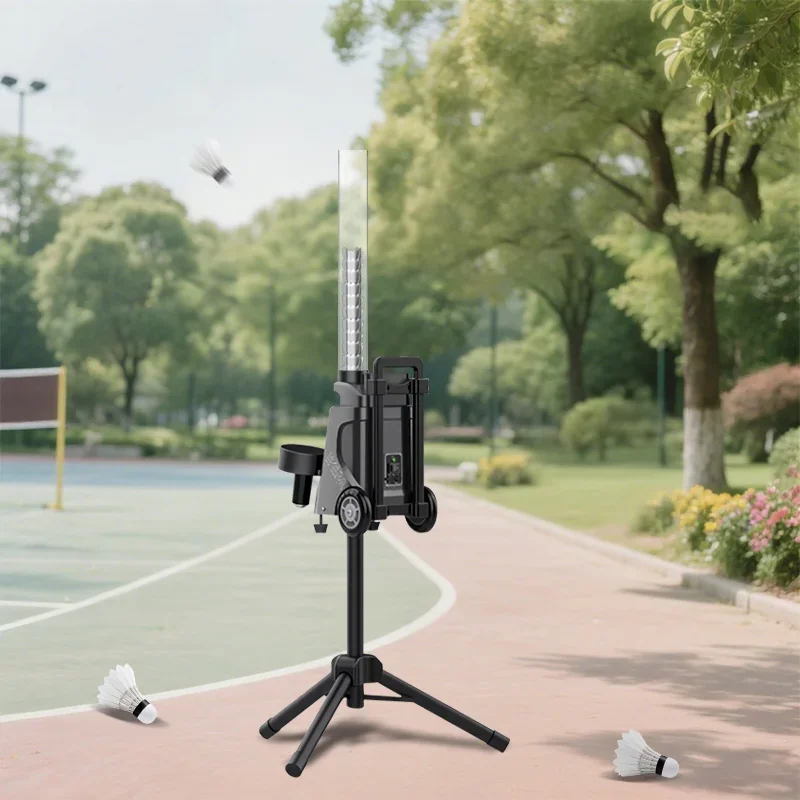
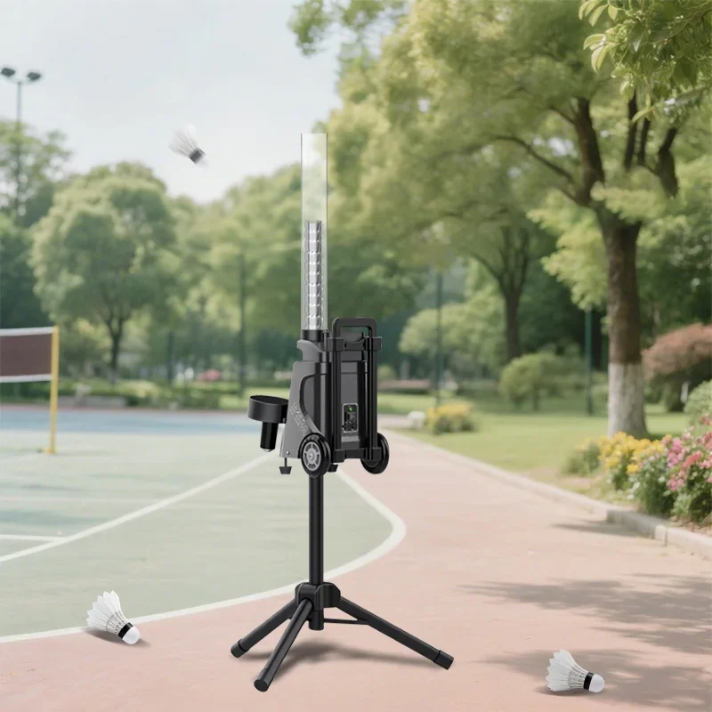
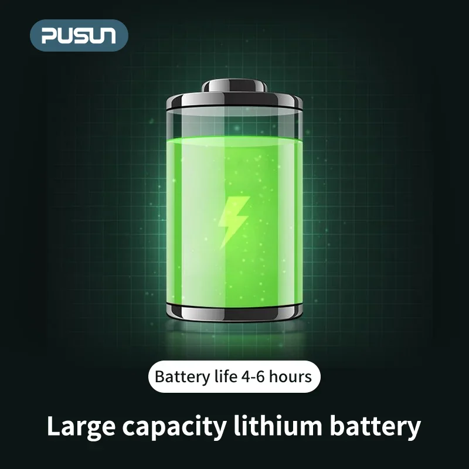
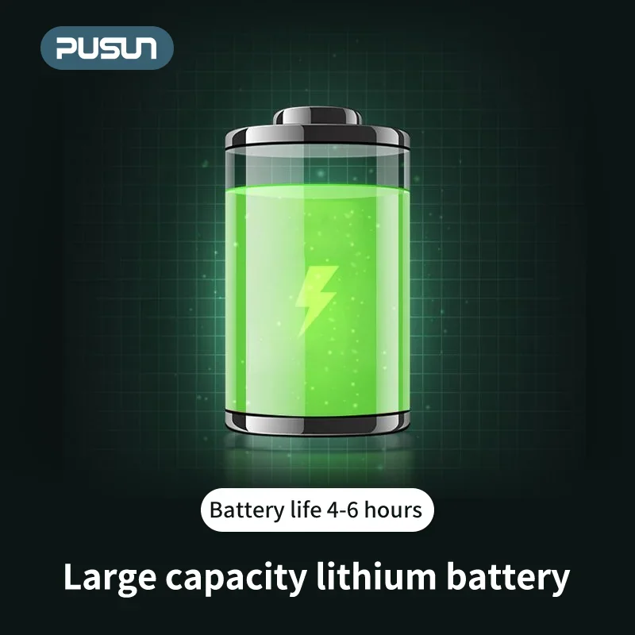

 

Máquina de servicio de bádminton PUSUN MINI Pro (lanzamiento en 2025) - 52 pelotas, alimentador deportivo, máquina de entrenamiento
- Alimentación de precisión: Con su robusto motor, la PUSUN MINI Pro ofrece tiros consistentes a diferentes velocidades y ángulos, simulando escenarios de juego reales con una precisión excepcional.
- Alta capacidad: Equipada con capacidad para 52 volantes, esta máquina minimiza el tiempo de inactividad entre saques, lo que permite sesiones de entrenamiento ininterrumpidas.
- Interfaz intuitiva: Los controles intuitivos y los ajustes de configuración facilitan la personalización de tu práctica, adaptando la velocidad, la trayectoria y la frecuencia de la pelota a tus necesidades específicas.
La máquina de saque PUSUN MINI Pro de 52 pelotas es más que una simple herramienta de entrenamiento; es tu entrenador personal, dedicado a ayudarte a perfeccionar tus reflejos, mejorar tu consistencia y dominar la cancha. ¡Experimenta el futuro del entrenamiento de bádminton! ¡Consigue la tuya hoy mismo!
La máquina de saque de bádminton PUSUN MINI Pro está diseñada para mejorar tu entrenamiento con saques consistentes y personalizables. Esta máquina compacta pero potente cuenta con una gama de características para ayudarte a perfeccionar tus habilidades y prepararte para la competencia.
- Alimentación automática de pelotas: La máquina alimenta automáticamente los volantes, eliminando la necesidad de cargarlos manualmente y permitiendo sesiones de práctica ininterrumpidas.
- Velocidad de servicio ajustable: Personaliza la velocidad de servicio para que se adapte a tu nivel de juego y a áreas específicas de tu juego.
- Múltiples tipos de servicio: Elige entre varios estilos de servicio, como servicios altos, servicios bajos y dejadas, para diversificar tu entrenamiento y desarrollar un conjunto de habilidades completo.
- Construcción duradera: Fabricada con materiales robustos, la PUSUN MINI Pro está diseñada para un rendimiento duradero y puede soportar un uso frecuente.
- Ligera y portátil: Su diseño compacto permite un fácil transporte y almacenamiento, lo que la hace adecuada tanto para entornos de entrenamiento en casa como al aire libre.
Esta máquina de servicio de bádminton está equipada con una variedad de especificaciones técnicas para garantizar un funcionamiento eficiente y preciso. Saques:
- Capacidad para pelotas: Admite una gran cantidad de volantes, lo que permite practicar durante largas sesiones sin interrupciones.
- Fuente de alimentación: Funciona con corriente eléctrica estándar, lo que proporciona un rendimiento fiable.
- Nivel de ruido: Diseñada con funciones de reducción de ruido para minimizar las molestias durante el entrenamiento.
La máquina de saque de bádminton PUSUN MINI Pro ofrece una gama de beneficios para jugadores de todos los niveles:
- Mayor consistencia y precisión en el saque gracias a saques automatizados.
- Mayor tiempo de reacción y agilidad al responder a diferentes velocidades y tipos de saque.
- Mayor control sobre tu entrenamiento personalizando los parámetros del saque para mejorar áreas específicas.
- Mayor confianza y rendimiento en la cancha con una práctica constante.
La PUSUN MINI Pro es fácil de usar. Simplemente carga los volantes, ajusta la configuración de saque deseada y comienza a entrenar. El sistema de alimentación automática de la máquina garantiza una experiencia de práctica fluida e ininterrumpida.
Nota: Consulte siempre el manual de instrucciones para obtener instrucciones de funcionamiento detalladas y precauciones de seguridad antes de utilizar la máquina.